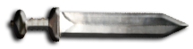

<!--TIMELINE MENU-->
<div id="timeline_menu" class="timeline-flex-item" (window:resize)="detectSize()">
<div id="timeline_menu_header">
		<a id="timeline_closebtn" (click)=hideTimelinePanel()>
      
    </a>	
</div>
<nav id="timeline_navbar" class="navbar navbar-expand-md">
   <ul id="timeline_ul" class="navbar-nav mr-auto mt-2 mt-md-0">
	  <div id="timeline_title">
		<h4>Timeline</h4>
	  </div>
	    <li *ngFor="let episode of episodeList" class="side nav-item">
        <a class="side nav-link" [routerLink]=[episode.route]>
          
          {{episode.title}} 
          <span class="sr-only">(current)</span>
        </a>
      </li>
    </ul>
</nav> 	
</div>